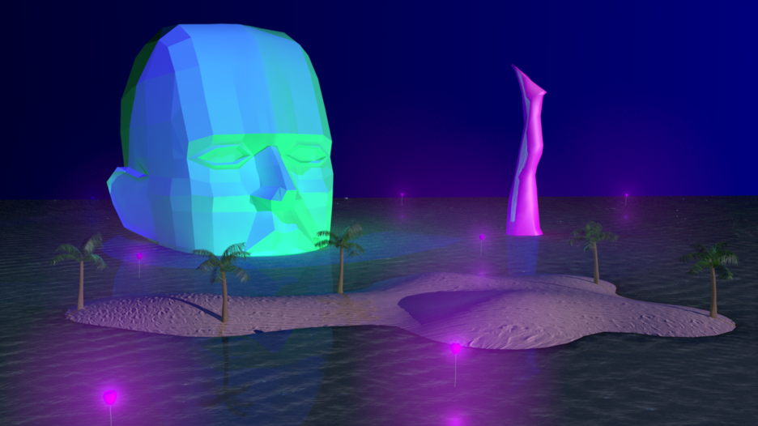

Lately
2016
3D Artwork
Autodesk Maya

Lately - 요즘 내 머릿속을 떠나지 않는 생각 조각들의 세상
대학생이 된 이래로 전에 하지 않던 생각을 하게 되었다. 과제, 학생회 업무, 약속 등으로 바쁜 삶을 살며 인간관계에 회의감을 느끼기도 하였다. 인간관계라는 것 자체가 하나의 거대한 세상으로 느껴지기 시작했고, 그 세상속에 있으며 난 나만의 공간을 갈구하기 시작했다. 나만의 섬-나 혼자만의 공간과 시간-이 필요했다. 정신 없는 바깥 세상과는 단절된, 아름답고 아늑한 나만의 섬을 만들어 나가겠다는 생각을 하게 되었다. 만약 그 섬이 형상화된다면 이 작품의 섬과 같을 것이다. 또 한가지 요즘 드는 생각은 섹슈얼리티에 관련된 생각이다. 그동안 난 의식적으로, 무의식적으로 이것 자체를 은근히 금기시했던것 같다. 유교 문화, 성 상품화에 대한 비난, 성에 대한 은폐성을 띈 성교육 등에 탓을 돌릴 수도 있을 것이다. 성적 요소들이 과연 나쁜 것일까, 당연히 아니다. 하지만 난 아직 ‘섹스’라는 단어를 입에 올리는 것 자체가 부담스럽고 약간의 죄책감도 드는 것 같다. 그래서 요즘 포르노그래피적 프레임으로 성을 바라보기를 그만두고 섹슈얼리티 그 자체를 받아들이기 위한 노력을 하고 있다.